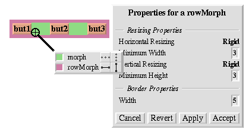

Resizing: summary
- Resizing behavior in one dimension is independent of the other dimension.
- Can be one of:
rigid, space-filling, shrink-wrap
- Can be inspected and changed using core sampler and property sheet:

|
Resize Attribute Summary
The resizing behavior of a morph in one dimension is completely independent of
its behavior in the other dimension; that is, a morph actually has two independent
resizing attributes, one for the horizontal dimension and one for the vertical
dimension.
To summarize, the resizing behavior of a morph along a given dimension is
controlled by its resizing attribute, which has one of three values:
rigid
The morph is not resized.
space-filling
In a row or column, the size of the morph adapts to fill the
available space. Extra space is shared evenly with any other space-filling
morphs in that row or column.
shrink-wrap
The morph is shrunk to just fit around its submorphs, or to its
minimum size, whichever is smaller. Enclosed space-filling morphs are
shrunk if necessary.
A morph's minimum size in a given dimension determines the smallest amount of
space that should be allocated to it during layout. The core sampler and/or
properties sheet (another blue menu item) can be used to change these attributes.
|